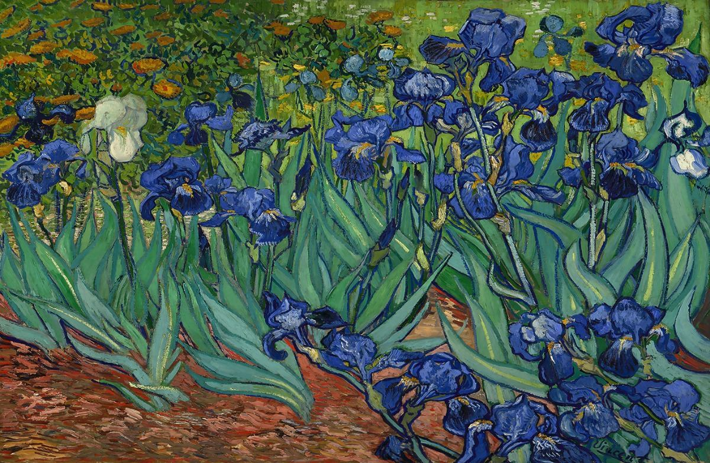
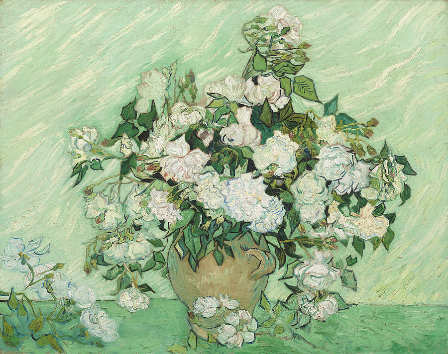

Van Gogh's Famous Paintings

The Starry Night
- Artist: Vincent Van Gogh
- Year: 1889
- Medium: Oil on canvas
- Dimensions: 73.7 cm x 92.1 cm
- Location: Museum of Modern Art, New York City
Van Gogh painted The Starry Night during his 12-month stay at the Saint-Paul-de-Mausole asylum near Saint-Rémy-de-Provence, France, several months after suffering a breakdown in which he severed a part of his own ear with a razor. While at the asylum, he painted during bursts of productivity that alternated with moods of despair. As an artist who preferred working from observation, van Gogh was limited to the subjects that surrounded him—his own likeness, views outside his studio window, and the surrounding countryside that he could visit with a chaperone.

Irises
- Artist: Vincent Van Gogh
- Year: May 1889
- Medium: Oil on canvas
- Dimensions: 71 cm x 93 cm
- Location: J. Paul Getty Museum, Los Angeles
Irises is one of several paintings of irises by the Dutch artist Vincent van Gogh, and one of a series of paintings he made at the Saint Paul-de-Mausole asylum in Saint-Rémy-de-Provence, France, in the last year before his death in 1890.
Van Gogh started painting Irises within a week of entering the asylum, in May 1889, working from nature in the hospital garden. There is a lack of the high tension which is seen in his later works. He called painting "the lightning conductor for my illness" because he felt that he could keep himself from going insane by continuing to paint.

Still Life: Vase with Pink Roses
- Artist: Vincent Van Gogh
- Year: 1890
- Medium: Oil on canvas
- Dimensions: 71 cm x 90 cm
- Location: National Gallery of Art East Building
Still Life: Vase with Pink Roses by Vincent van Gogh. It was painted in 1890 while Van Gogh was preparing to leave the asylum in Saint-Rémy for the quiet town of Auvers-sur-Oise.